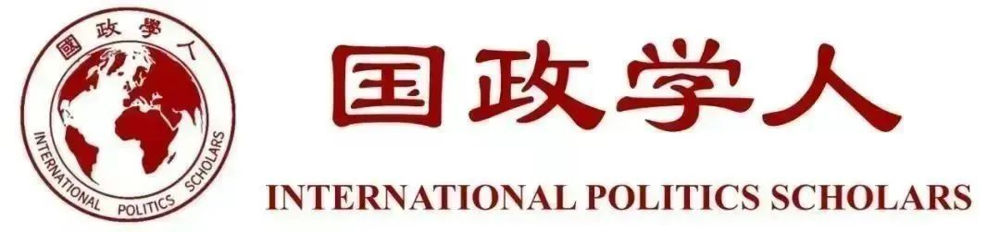
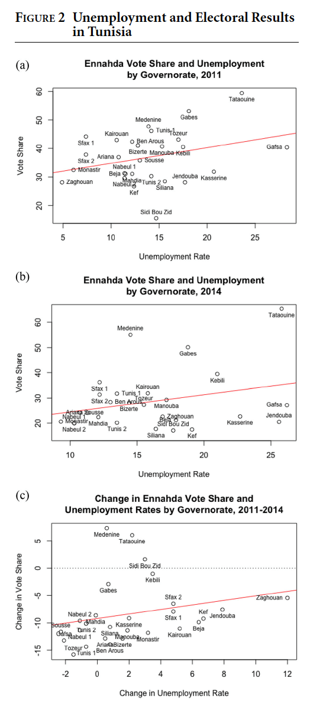
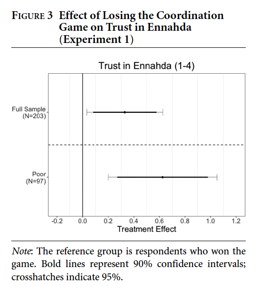
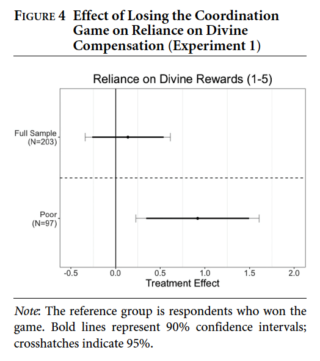
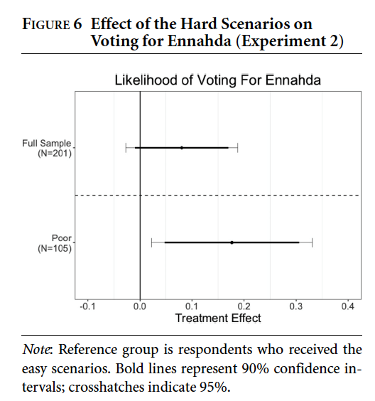
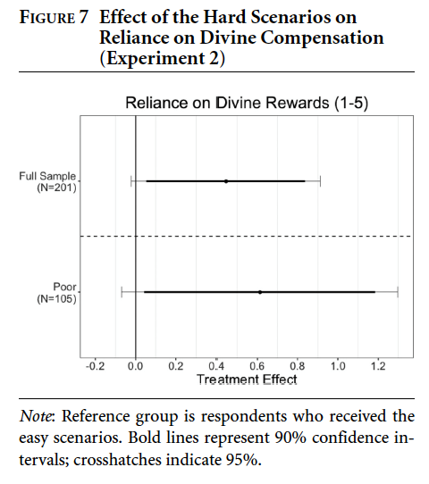
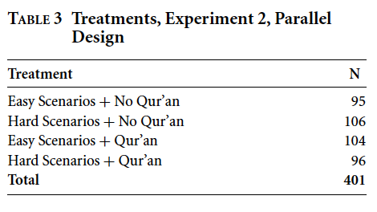
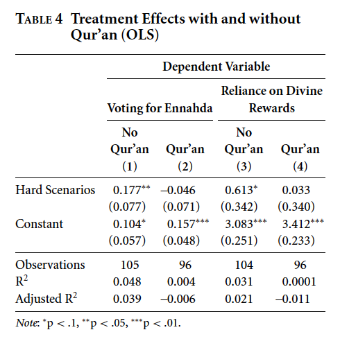

收录于合集

作品简介
【作者】 沙兰·格雷瓦尔（Sharan Grewal），威廉与玛丽学院政治学系助理教授，布鲁金斯学会访问研究员（nonresident fellow），中东民主计划（Project on Middle East Democracy）高级访问研究员。2018年获普林斯顿大学博士学位。其研究兴趣为阿拉伯世界的民主化、安全研究和政治伊斯兰，尤其是埃及、突尼斯和阿尔及利亚。具体而言，他的研究主要关注民兵和宗教运动对民主化的影响；
阿曼尼·贾马尔（Amaney A. Jamal），普林斯顿大学爱德华·斯坦福政治学讲席教授，曼杜哈·博斯特和平与公正中心（Mamdouha S. Bobst Center for Peace and Justice）主任，2003年获密歇根大学博士学位。其主要研究兴趣为中东和北非的大众政治行为、政治发展与民主化、不平等与经济孤立、美国和欧洲的穆斯林移民和性别、种族、宗教、阶级等其他议题；
塔里克·马苏德（Tarek Masoud），哈佛大学肯尼迪学院公共政策教授，阿曼苏丹卡布斯·本·赛义德国际关系讲席教授，耶鲁大学政治学博士。其主要研究兴趣为阿拉伯语国家和穆斯林为主要人口的国家的政治发展，著有《细数伊斯兰：埃及的宗教、阶级与选举》（Counting Islam: Religion, Class, and Elections in Egypt）和《阿拉伯之春：镇压与改革之路》（The Arab Spring: Pathways of Repression and Reform）等著作；
伊丽莎白·纽金特（Elizabeth R.Nugent），耶鲁大学政治学系助理教授，普林斯顿大学政治学博士。其研究探索威权主义背景下的政治行为、宗教和政治以及强制性制度的起源，综合运用调查、投票、档案和访谈数据，并结合定量、定性和实验的方法。
【编译】 许文婷（国政学人编译员，北京大学）
【校对】 崔宇涵
【审核】 施 榕
【排版】 赵怡雯
【来源】 Grewal, S., Jamal, A. A., Masoud, T., & Nugent, E. R. (2019). Poverty and divine rewards: The electoral advantage of Islamist political parties. American Journal of Political Science, 63 (4), 859-874.

期刊简介
美国政治科学期刊（American Journal of Political Science, AJPS）是创刊于1957年的政治科学领域综合类期刊，也是中西部政治协会（MPSA）的官方期刊。根据Journal Citation Reports数据，其2019年的影响因子为4.271，在176种政治科学期刊中排名第2。
**贫困与宗教回报：伊斯兰政党的选举优势
**
Poverty and Divine Rewards: The Electoral Advantage of Islamist Political Parties
沙兰·格雷瓦尔
Sharan Grewal
阿曼尼·贾马尔
Amaney A. Jamal
塔里克·马苏德
Tarek Masoud
伊丽莎白·纽金特
Elizabeth R.Nugent
内容提要
伊斯兰主义政党在选举中的主导地位是许多以穆斯林人口为主的国家政治生活的标志。最近的一些探究其原因的研究强调了物质和组织方面的因素，例如提供社会服务等。本文回顾一篇较早的文献，强调了这些政党的宗教本质对经历经济困难的投票者的吸引。遭受经济压力的个人可能会给伊斯兰主义者投票，因为他们相信这是一种品质高尚的内在行为，会让他们在来生获得宗教回报。本文通过在突尼斯进行的一系列实验室实验对这一假设进行探究。被分配在有经济压力感条件下的个人对伊斯兰政党表现出了更大程度的支持，并且这一支持在因果关系上是由对来世宗教补偿的期望作为中介变量实现的。本文证据表明伊斯兰主义政党的宗教本质可能是其选举胜利的一个重要因素。
文章导读
01
经济压力、宗教与政治伊斯兰
尽管最近的关于伊斯兰主义的研究倾向于回避心理机制，而重点关注物质机制，但早期文献对心理方面十分重视。许多关于政治伊斯兰崛起的文献将其视为对于社会和经济不满的回应，例如现代化(Berman2003; Deeb 2006; Ibrahim 1980)、城镇化(Ayubi 1993)、西方帝国主义(Esposito 1998; Gellner 1991)和威权主义(Wickham 2002)等。伊斯兰教和伊斯兰主义提供了关于来世天堂的许诺，因此被视为个人应对动荡和苦难时刻时依赖的一种安慰性应对机制。
在无数潜在的压力源中，在学术和政策讨论中最通用的是经济压力。最近的文献为经济压力和宗教信仰之间、经济压力和政治伊斯兰之间以及宗教信仰和政治伊斯兰之间的相关性提供了定量支持，但它们既没有发现经济压力对政治伊斯兰的因果关系，也没有阐明其运作的可能的因果机制。大多数将经济压力与政治伊斯兰联系起来的研究都强调伊斯兰政党在物质再分配和提供社会服务中发挥的作用。但本文认为，宗教也是伊斯兰主义政党获得支持的重要原因，并且是一个重要的、独立的因素。
本文提出的假设很简单：经济压力导致个人表现出对来世宗教回报更大的愿望，这反过来又导致他们进行他们认为在宗教上有功德的行为，包括投票支持伊斯兰政党。对天堂和地狱的信仰以及相关的奖励和惩罚是伊斯兰信仰的核心宗旨，而信奉伊斯兰教的穆斯林认为，一个人的归宿取决于一个人的善恶平衡。对于往生极乐的许诺可能会给遭受经济压力的人们提供安慰。本文认为，宗教上的善举不仅涉及祈祷和慈善事业，还可以包括更多的政治行为，例如加入伊斯兰运动或为伊斯兰政党投票。而伊斯兰主义者们也的确经常宣扬来世以动员其支持者。尽管各类穆斯林政客通常都会例行公事地强调对真主的信仰，但伊斯兰主义者可能会特别地试图将为他们投票的举动描绘为赢得上帝支持的行为。因此，有理由认为，最需要真主支持的选民最容易受到此类呼吁的影响。
02
经济压力与对政治伊斯兰支持的联系
作为检验本文理论的第一步，本文试图确定经济状况与对伊斯兰政党的支持之间存在关联。在微观层面上，本文使用了调查数据，在宏观层面上则使用了突尼斯24个省的选举结果。
为了衡量恶劣的经济状况与个人对政治伊斯兰的支持之间是否存在关联，本文使用了阿拉伯晴雨表（Arab Barometer）的调查数据。本文首先选取了阿拉伯之春后伊斯兰主义政党表现最好的国家——埃及与突尼斯在2011年举行自由公正选举前夕的调查数据，同时也融入了所有阿拉伯国家在第二波（2010-11）和第三波（2013-14）调查中的数据。本文使用了问卷中一个衡量被调查者对本国主要伊斯兰主义政党信任程度的问题来将因变量操作化，并使用被调查者自述的收入来衡量最关键的自变量：经济压力。本文对收入取对数，将其重新调整到0至1的范围中。在此基础上，本文进行了回归分析，将对伊斯兰主义的支持作为因变量，收入作为自变量，年龄、性别、宗教信仰、婚姻状况、国家的固定效应（在分析所有阿拉伯国家时）作为控制变量。回归分析的结果如图1所示。正如预期的那样，贫困的被调查者们比稍微富裕的调查者们更倾向于信任伊斯兰主义政党，这在埃及、突尼斯和所有阿拉伯国家都是如此。
1

2
在微观层面对个人的回归分析使分析者们认为，如果遇到经济压力的个人更有可能投票支持伊斯兰主义者，那么同时也应该观察到经济状况与支持伊斯兰政党之间的空间相关性。为了探讨这种关系，本文检验了突尼斯阿拉伯之春后的选举结果。对比突尼斯2014年国民议会选举的结果和2011年立宪会议选举的结果，可以发现突尼斯复兴运动党（Ennahda，突尼斯最主要的伊斯兰主义政党）的得票率和排名都有所下降。根据传统的“钱包投票理论”，这是由于2011-2014年复兴运动党领导的联合政府执政时期突尼斯经济状况的恶化导致的。然而，本文发现，受下滑经济影响最严重的地区事实上更倾向于保持对复兴运动党的支持。图2展示了复兴运动党在2011年、2014年选举中在突尼斯所有行政区的得票率情况，以及这些地区对应的失业率水平。图二中的三张小图反映了在2011年和2014年，高失业率的地区都更倾向于支持复兴运动党。更令人惊讶的是，在2011-2014年复兴运动党执政期间，它的支持率在失业率降低的地区反而下降了，而在失业率升高了的地区也上升了，这说明其支持率可能是由于经济压力获得了提升。
微观与宏观两个层面的结果综合起来为本文的假设提供了支持。然而，这些结果仅仅反映出了一种相关关系，却并不能揭示因果机制。为了进一步探究经济压力与对伊斯兰政党支持间的因果机制，本文设计了一系列的实验来进行检验。
03
解析因果机制
本文于2016年6月和2017年1月在突尼斯的首都突尼斯城进行了两次实验室实验。在这两次实验中，因变量“对政治伊斯兰的支持”都被操作化为对复兴运动党的支持。两组实验是在突尼斯市区一家临近地铁站的租用店面中进行的，共采集了654名突尼斯成年公民的样本。在这两个实验中，实验人员首先向参与者询问一系列基本信息问题，然后对他们进行实验干预，再提出一些有关本实验因变量和因果机制的问题。两次实验都采用了被试间设计，一组接受使其感到经济压力的实验干预，另一组则作为对照组，未受到此类干预。本文假设相对于对照组，感到经济压力的对照组将对宗教回报（中介变量）的期待更高，从而对复兴运动党（因变量）的支持也更高。在第二个实验中，本文还进行了平行设计，增加了第二种设计以直接影响中介变量，以增加这一因果关系理论化的信度。在第一个实验中，经济压力通过一个修改后的协同博弈引发，参与者根据一个看不见但确定的同盟者的行为赢钱或输钱。在第二个实验中，参与者被暴露于Mani等人使用的假设财务情景中。这些场景描述了随机的经济冲击，例如汽车故障或需要维修的冰箱，并询问受访者他们将如何应对，以引入经济压力。
实验一:协同博弈
在实验一中，每个参与者在一开始得到五个第纳尔（Dinar，突尼斯货币名称），并被询问是否愿意参加一个协同博弈的游戏，参与者们被告知如果另一名参与者“哈桑”也决定玩这个游戏，他们将每人获得二十个第纳尔的奖励，而如果“哈桑”决定不玩这个游戏，那么参与者就将输掉手上的五个第纳尔。事实上，“哈桑”并非真人，他的决定是由电脑软件随机生成的，这也使得实验具有随机性。
在实验一的253名参与者中，209名同意参与该游戏，其中102名赢得了这个游戏，107名输掉了游戏。在实验设计中，经济压力即是由输掉游戏产生的，输掉游戏不仅意味着失去五个第纳尔，也意味着失去赢得额外的十五个第纳尔的机会。为了测量参与者对伊斯兰主义政党的支持程度，参与者们被要求按照1-4的范围选择自己对复兴运动党的信任程度（1:完全不信任，4:极大程度上信任）。实验的结果如图3所示，与全样本相比，输掉游戏的干预组（贫穷者）对复兴运动党的信任程度显著偏高。这一结果说明经济压力与对伊斯兰主义政党的信任间存在因果关系。为了证明本文提出的假设，即经济压力给个人带来了更强的对于宗教回报的渴求，实验人员向每名参与者询问对于这一说法的认可程度（1-5）：“与不公正作斗争永远不值得付出代价，我们应该在来世依靠上帝的补偿。” 这个问题的目的是证明被试者在感觉到不公正之后（这里是“哈桑”行动的结果造成自己蒙受了损失），是会相信寻求报应还是仅仅寻求宗教补偿的安慰。这一问题的结果如图4所示。与全样本相比，干预组对这一说法的认同程度更高，这也说明他们对宗教补偿有着更高的期待。这些结果加在一起表明，在贫困者中，经济压力的干预不仅增加了对宗教补偿的依赖，也增加了对伊斯兰主义政党复兴运动党的信任。为了确定参与者是否通过支持复兴运动党的方式来获得宗教回报，本文在所使用的预测穷人对复兴运动党信任的OLS模型（Baron and Kenny 1986）中加入了对宗教回报的信念作为协变量。虽然干预后的系数并没有
 
完全失去显著性，但p值从0.0039下降至0.01，这表明输掉协同博弈游戏对复兴运动党信任的影响至少部分是通过相信宗教回报来传导的。最后，为了更清楚地表明只有那些依赖宗教补偿的人对复兴运动党的信任会增加，本文对干预组进行了组内对比，依照参与者对宗教回报的依赖程度高于或低于中位数将其分为两组，并分别计算其对复兴运动党的信任程度。图5显示，同样是输掉游戏较为贫穷的一组，对宗教回报有更高依赖的一组对复兴运动党的信任程度也显著地更高。
综合而言，实验一得出了三个主要的结论：第一，由输掉协同博弈游戏导致的经济压力导致在穷人中对复兴运动党信任的增加。第二，输掉游戏也增加了穷人对宗教补偿的依赖。第三，对复兴运动党的支持在输掉游戏并对宗教回报依赖程度较高的一组中最为明显。实验一也有两大不足之处：第一，没有一个纯粹的对照组，第二，实验一无法进行因果关系中介变量的分析，也无法检验替代性解释。为了解决这些问题，实验人员于2017年重返现场，进行了第二次实验。
实验二：压力场景
单实验设计
实验二通过将参与者暴露在Mani等提出的四种假设的财务情景中的方式引入经济压力。其中一半被分配到一个“困难”的情况中，这种情况下的四个场景需要的花费相对较高，另一半则被分配到一个“轻松”的情况中，这种情况下四个场景需要的花费相对较低。举例来说，其中一个情景是假设参与者本人的汽车亟需修理，“困难”的情况下修车金额约需要3000第纳尔，而“轻松”的情况下仅需200第纳尔。在201名参与者中，95名被分配到了“轻松”的情况，106名被分配到了“困难”的情况。根据Mani等的发现，困难的场景对穷人造成经济压力，但对富人没有太大影响。因此，在实验二中，实验人员在招募参与者时去除了月薪超过1000第纳尔的人群。而在进行结果分析时，本文进一步把参与者按照月薪是否达到600第纳尔划分为了“穷人”和“中产阶级”两个类别，并分别观察两组的处理效应。
实验二相较于实验一做出了两项改进：第一，实验二将因变量由对复兴运动党的信任改为了为复兴运动党投票。对应的问题改为“如果明天要举行选举，你将投票给哪个政党”。选择复兴运动党的样本编码为1，否则为0。第二，实验二改进了对中介变量，即宗教补偿的测量，将其具体置于经济冲击的框架下。参与者被问到是否同意的说法是：“当人们蒙受金钱或其他形式的经济损失，他们应该依靠上帝在来世的补偿，而不用太多地担忧现世的损失”。
图6表明了“困难”场景对给复兴运动党投票情况的影响。与全样本相比，经历了“困难”场景的参与者（“穷人”）在给复兴运动党投票的意愿上高出了18个百分点。图7表明了“困难”场景对宗教补偿依赖程度的影响。与全样本相比，经历了“困难”场景的参与者（“穷人”）对宗教补偿的依赖程度上升了12%。

1

对穷人来说，经济压力场景使得其对宗教补偿的依赖和投票支持复兴党的倾向都提高了。同样地，对宗教补偿的依赖对穷人中给复兴运动党投票的倾向也有明显的积极影响（p
.045）。为了了解这种对宗教补偿的依赖对给复兴运动党投票是否存在因果关系上的中介作用，我们将其作为协变量加入Baron与Kenny预测给复兴运动党投票情况的模型中。同时，为了排除其他可能的机制，实验人员专门询问了被试者为何倾向于投票给他们选择的政党。得到的结果是，参与者们的投票倾向并不是由预期该党将代表穷人进行再分配而驱动的。
** 平行设计：提示宗教回报**
为了深入探究宗教回报（补偿）在这一因果机制中的中介作用，并解决处理后误差（post-treatment bias） ，实验二还进行了平行设计。实验人员额外招募了200名参与者，并在他们身上同样施加上述的经济情景干预。但在这一环节，实验人员直接影响中介变量：宗教回报。实验人员增加了一个实验干预的维度“古兰经”：在实验进行过程中重复播放古兰经“同盟军”章（艾哈萨布章）经文内容，该章节反复提到依赖真主以获得死后“慷慨回报”的重要性。这一环节的实验干预设计如下表3所示。实验人员期望这样的经文内容能提醒并鼓励人们更多地考虑来世的宗教回报，而不过分计较现世的损失。本文假设，在那些期望通过古兰经获得宗教回报的参与者中，“困难”的场景带来的压力应当不比“轻松”的场景更大。其结果是，在有古兰经干预的情况下，困难与轻松的场景对支持伊斯兰主义者的影响应当是相同的。表4展示了困难场景下的结果。表中四种模型的回归结果都表明，在有古兰经的情况下，对复兴运动党的支持情况未受到“困难”场景干预的影响，证明了宗教回报的中介效应存在。图8展示了实验二中平均处理效应和平均直接处理效应的情况。
 
2
综上所述，实验二得出了三个主要结论：第一，困难场景增加了在没有《古兰经》条件下穷人投票支持复兴运动党的可能性（p = .024）。第二，在没有《古兰经》的情况下，困难场景增加了穷人对宗教回报的依赖（p = .075）。第三，通过平行设计发现，实验干预对给复兴运动党投票的影响通过宗教回报受到调节。总之，两个实验室实验表明，引入经济压力会增加个人对宗教回报的依赖，而这反过来又增加了对伊斯兰政党的支持。
作为稳健性检验，本文对给突尼斯三大世俗政党的投票倾向进行了回归分析，发现对宗教回报的依赖与对这些政党的支持是负相关的，证明了实验结论的稳健性。
** 为了取悦神明的投票**
实验设计中剩下的一个待解决的问题是投票究竟是否被投票者视为一种取悦上帝的方式。在实验二中，实验人员询问参与者为何投票给他们选择的政党，并提供了六个答案选项进行排序。实验结果表明，投票给复兴运动党的选民对“如果我投票给这个政党，安拉会更高兴”这一答案的认可程度更高。通过赫克曼选择模型，实验人员发现支持复兴运动党的贫穷选民更倾向于（31%）将取悦安拉列为前两个原因。这一发现证明了绝大多数贫穷的投票者认为给复兴运动党投票是取悦安拉的方式。
04
结论
本文提供的证据表明，经济压力使个人倾向于对获得宗教回报表现出更大的需求和渴望，更重要的是，这将转化为对宗教团体的支持。借助“阿拉伯晴雨表”的调查数据，本文发现穷人比富裕的人更有可能信任伊斯兰主义团体。而在突尼斯最近的选举中，本文发现伊斯兰主义政党复兴运动党在其治理下经济恶化的地方所面临的惩罚比预期的少。为了探索经济压力与对复兴运动党的支持之间的联系是否确实是因果关系而非相关关系，本文作者在突尼斯进行了两个实验室实验。在第一个实验中，本文发现输掉修改后的协同博弈会增加个人对宗教回报的重视程度以及他们对复兴运动党的信任。在第二个实验中，本文作者让贫困的受访者承受一系列假设情景的压力，他们被要求想象一些财务困难，这同样具有增加他们对宗教回报的渴望和投票给复兴运动党可能性的效果。
本文对后续研究有一下几点提示：第一，本文的设计与结论更适用于单一的伊斯兰主义政党与多个世俗政党竞争的情景；第二，在应用本研究的结论时要避免一种“东方主义”的观点，即认为穆斯林的活动很大程度上只是受到他们宗教的影响；第三，对于机制的研究并不代表每个个体穆斯林选民的具体情况，它也不能完全解释每个个体的行为。但是，如果本文的发现能够支持未来学者的复制和推广，他们将建议在解释对伊斯兰教派和其他宗教派别的支持时，应更加重视宗教的作用。
译者评述
伊斯兰主义政党在2011年阿拉伯之春后该地区各国民主选举中的崛起是一个吸引了许多学者的重要政治现象。对这一问题的解释有许多不同的角度，此前笔者曾在本公众号译介过一篇从威权政权经济政策和社会鸿沟的角度分析这一现象原因的文章，这是从物质和组织机制角度进行研究的代表。这一类型的学者着力于寻找伊斯兰主义崛起的现实因素，提出的主要解释有清真寺和其他宗教机构网络带来的组织动员优势、提供社会福利、其宗教特征代表的其他非宗教优良特质及其在经济政策上的立场等。通过一系列的案例研究，这些解释都找到了很好的实证证据，提供了深入的分析。
但伊斯兰主义政党与其他政治团体不同的是，它的产生有着很强的宗教特征，与伊斯兰教本身紧密相连。因此，许多学者亦提出应当抓住这一政党的宗教性质进行分析。这篇文章即是从宗教性质进行分析的代表性研究。本文认为，伊斯兰主义政党的宗教属性使其对于遭遇经济困难的投票者更具有吸引力。已有学者证明，人们在遭受世俗的不幸时会从宗教许诺其信徒的宗教补偿中获取慰藉，宗教的教义指出神明将会奖赏那些那些取悦他们的人，而伊斯兰主义者提出投票支持他们的政党正是这样取悦神明的行为。因此，支持宗教性的政党也正是人们在面临压力的时刻寻求宗教慰藉的其中一种方式。
本文在技术上的一大亮点是使用了实验的方法，与对观测数据进行统计分析的方法相比，实验能够更好地满足数据生成的随机性，并且可以通过研究设计直接对所研究变量进行处理，并对其他干扰变量进行控制，更好地探究所研究变量间的因果关系。同时，在探究中介变量的作用时，本文采取了平行设计的方式，这一部分的技术细节也值得读者更深入地学习。
<img src=’/images/1963/19.jpeg’ width=‘100%’ />文章观点不代表本平台观点，本平台评译分享的文章均出于专业学习之用, 不以任何盈利为目的，内容主要呈现对原文的介绍，原文内容请通过各高校购买的数据库自行下载

好好学习，天天“在看”
国政学人
支持学术公益与知识传播
微信扫一扫赞赏作者 __赞赏
已喜欢，对作者说句悄悄话
取消 __
发送给作者
发送
最多40字，当前共字
上一页 1/3 下一页
长按二维码向我转账
支持学术公益与知识传播
受苹果公司新规定影响，微信 iOS 版的赞赏功能被关闭，可通过二维码转账支持公众号。